![]()
library(tidyverse)
library(here)Data visualization in R with ggplot2
Week 13 – Lecture B
1 Introduction
Data visualization is a critical step in data analysis, both to explore your data and to communicate your findings: plots can reveal patterns and trends that are hard to see in raw data. In this lecture, you will learn how to create informative, publication-ready plots with the ggplot2 package.
ggplot2 is based on the “Grammar of Graphics”, a set of rules to describe plots, and creates plots layer by layer: you start with your data, and then add layers that e.g. represent the data points (“geoms”), change the colors, or add axis labels. Because you can add as many layers as you want, plots are fully customizable.
1.1 Overview & learning goals
In this lecture, you will learn:
- Basic syntax of the
ggplot()function, including aesthetic mappings withaes() - How to create scatter plots, bar graphs, box plots, and histograms
- How to change colors, add titles and labels with
labs(), and apply themes liketheme_bw() - How to change the order of categories in a plot
- How to facet plots using
facet_wrap()andfacet_grid() - How to reshape data from wide to long format with
pivot_longer()for plotting - How to export plots in different formats
2 Setting up
2.1 A new Quarto document
Create a new Quarto document and save it as week13b.qmd in your week13 folder, and add a YAML header.
2.2 Loading packages
For this lecture, we will use the tidyverse, which includes ggplot2, and here for file paths:
We’ll keep working with the penguins data set from Monday’s lecture, which comes with R.
3 Creating a ggplot
To create a plot with the ggplot2 package, you start with the function ggplot() (note: the package is called ggplot2, but the function ggplot()). A basic ggplot has three components:
- Data: the data frame with the variables to be plotted — here, the
penguinsdata set. - Aesthetic mappings: how variables in the data are mapped to visual properties of the plot, such as the x and y axes, colors, shapes, and sizes.
- Geometries (“geoms”): layers that represent the data, e.g. as points (scatter plot), bars, or boxes.
The ggplot2 cheat sheet gives an overview of the many types of plots you can create with ggplot2.
3.1 Data
The first argument of ggplot() is your data frame, which you can provide inside the function, or by piping it into the function:
# Two ways of passing the data frame to ggplot():
ggplot(data = penguins)# We will use this style throughout the lecture:
penguins |>
ggplot()
We get a blank plot because we haven’t told ggplot() what to plot yet: we only specified the data frame. Next, we will map variables to the x and y axes with the aesthetics function aes().
3.2 Aesthetic mappings (aes)
Aesthetic mappings define how variables in the data are mapped to visual properties of the plot. The x and y arguments of the aes() function define the variables to be plotted on the x-axis and y-axis, respectively. Let’s say we want to create a scatter plot with bill_len on the x-axis and bill_dep on the y-axis:
penguins |>
ggplot(aes(x = bill_len, y = bill_dep))
Now the axes are there, but there are still no data points, because we haven’t told ggplot() how to represent the data. For that, we need to add a geometry (geom) layer, such as geom_point() for a scatter plot, geom_bar() for a bar graph, or geom_boxplot() for a box plot. Because both of our variables are continuous, a scatter plot is a good choice: we’ll add a geom_point() layer using the + operator.
3.3 Geoms
penguins |>
ggplot(aes(x = bill_len, y = bill_dep)) +
geom_point()Warning: Removed 2 rows containing missing values or values outside the scale range
(`geom_point()`).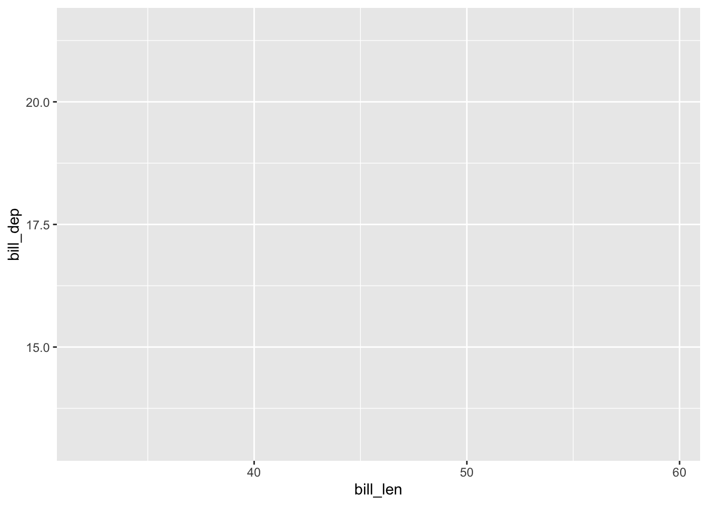
Finally, we can see the scatter plot!
You’ll see a warning that 2 rows were removed: two penguins have missing values (NA) for bill length and depth, and can’t be plotted. This is expected, and you’ll see the same warning for many plots below.
TipThe Plots pane (Click to expand)
When you run plotting code interactively, the plot appears in the Plots pane in the Secondary Side Bar. A few useful features of this pane:
- The arrows at the top let you go back and forward through the plots you made earlier in your R session.
- The expand button opens the plot in a larger editor tab.
- If you use a dark color theme, click the circle icon at the top and select “Dark Filter” or “Follow Theme” to show plots on a dark background. This only affects how plots are shown in Positron, not how they look when you render or save them.
4 More aesthetics
Besides x and y, there are other aesthetics, such as color, shape, and size. Let’s add a third variable to the scatter plot by coloring the points by penguin species. To do so, we map the species variable to color inside the aes() function. When a categorical variable is mapped to color, ggplot2 automatically assigns a color to each category, and adds a legend that shows which color corresponds to which category:
penguins |>
ggplot(aes(x = bill_len, y = bill_dep, color = species)) +
geom_point()Warning: Removed 2 rows containing missing values or values outside the scale range
(`geom_point()`).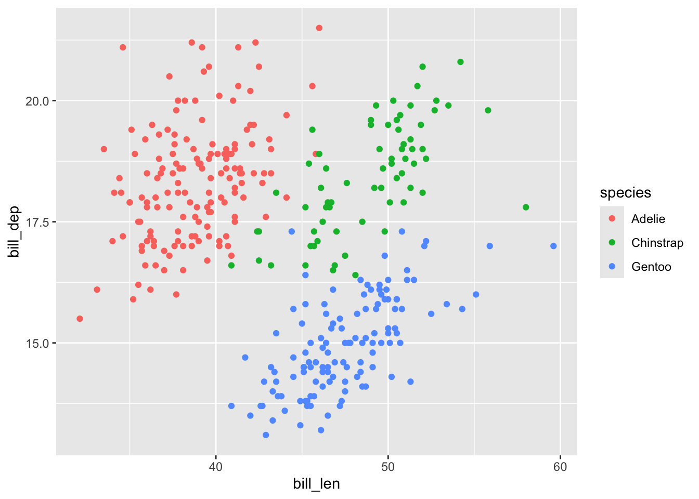
Now, each point is colored by the species of the penguin.
Exercise 1: Mapping versus setting colors
What do you think will happen if you keep
color = speciesoutside ofaes()? There are actually three different ways to do this – try each one and see what happens:ggplot(aes(x = ..., y = ...), color = species)– still insideggplot(), but outsideaes()geom_point(color = species)– insidegeom_point(), outsideaes()geom_point(color = "red")– insidegeom_point(), outsideaes(), but with a fixed value instead of a variable
And what do you think will happen if you put a fixed value inside
aes()?geom_point(aes(color = "red"))
- Create a scatter plot with
bill_lenon the x-axis andbill_depon the y-axis. Color the points byspecies, and mapislandto the shape of the points.
4.1 Mapping vs. setting
Sometimes you want to give all points the same color or size. To map a variable to an aesthetic, put it inside aes(); to set an aesthetic to a fixed value, put it outside aes(), like with geom_point(color = "red") in the previous exercise.
4.2 Global and local mappings
In the examples above, we mapped aesthetics like color = species inside ggplot(), which is the global level: these mappings are passed down to all geom layers. Alternatively, each geom layer can have its own aesthetic mappings at the local level. To see the difference, let’s add a second geom, geom_smooth(), which adds a trend line:
penguins |>
ggplot(aes(x = bill_len, y = bill_dep, color = species)) +
geom_point() +
geom_smooth(method = "lm")`geom_smooth()` using formula = 'y ~ x'Warning: Removed 2 rows containing non-finite outside the scale range
(`stat_smooth()`).Warning: Removed 2 rows containing missing values or values outside the scale range
(`geom_point()`).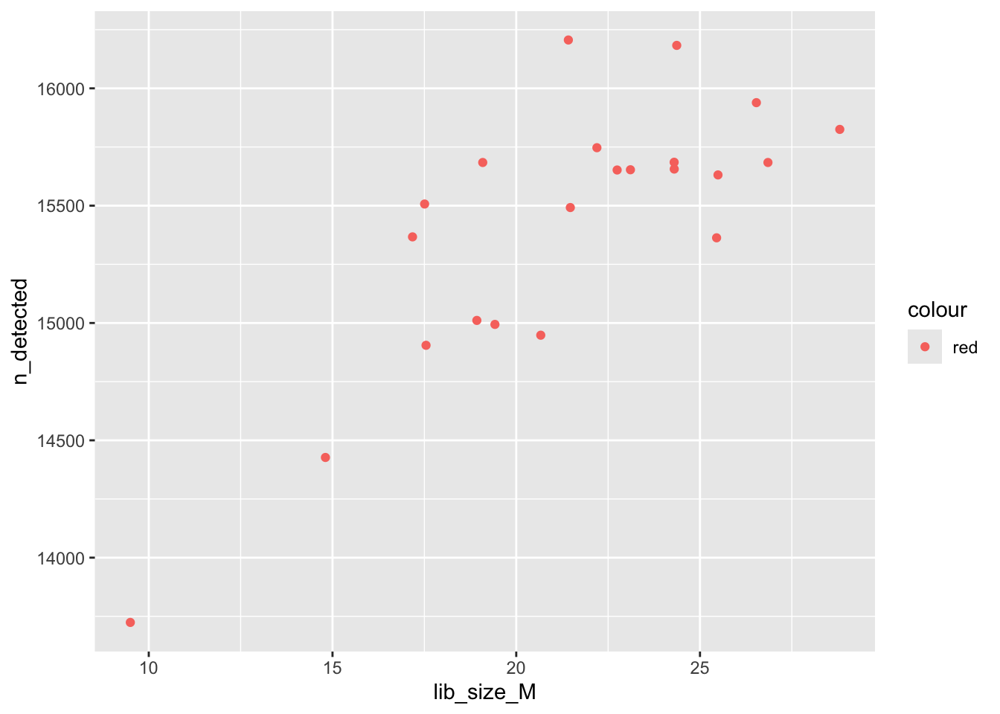
Above, we mapped color = species at the global level inside ggplot(), so both the points and the lines are colored by species, and geom_smooth() fits a separate line for each species.
penguins |>
ggplot(aes(x = bill_len, y = bill_dep)) +
geom_point(aes(color = species)) +
geom_smooth(method = "lm")`geom_smooth()` using formula = 'y ~ x'Warning: Removed 2 rows containing non-finite outside the scale range
(`stat_smooth()`).Warning: Removed 2 rows containing missing values or values outside the scale range
(`geom_point()`).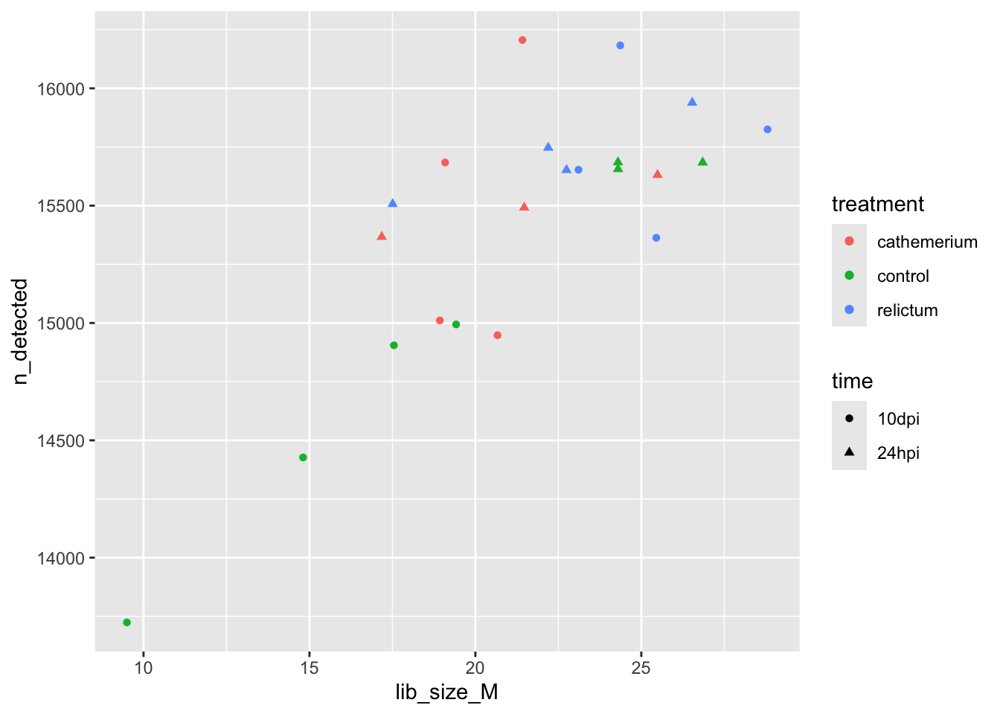
Here, we mapped color = species at the local level inside geom_point(). Therefore, only the points are colored by species, while geom_smooth() fits a single line across all species, in the default color (blue).
5 Customizing plots
Next, we’ll change the look of our plot: its colors, titles and labels, and overall theme. These functions work the same way for any type of plot.
5.1 Manually changing the colors
So far, we’ve used ggplot’s default colors. To pick the colors yourself, use the scale_color_manual() function:
penguins |>
ggplot(aes(x = bill_len, y = bill_dep)) +
geom_point(aes(color = species)) +
scale_color_manual(values = c("grey55", "orange", "skyblue")) +
geom_smooth(method = "lm")`geom_smooth()` using formula = 'y ~ x'Warning: Removed 2 rows containing non-finite outside the scale range
(`stat_smooth()`).Warning: Removed 2 rows containing missing values or values outside the scale range
(`geom_point()`).
The colors are assigned in the order of the species in the legend. Run colors() to see the names of all colors that R knows.
For ready-made color palettes, see the optional R self-study page.
5.2 Adding titles and labels
To add a title and change the axis labels, use the labs() function, with arguments title, x, and y:
penguins |>
ggplot(aes(x = bill_len, y = bill_dep)) +
geom_point(aes(color = species)) +
geom_smooth(method = "lm") +
labs(
title = "Scatter plot of bill length vs bill depth",
x = "Bill length (mm)",
y = "Bill depth (mm)"
)`geom_smooth()` using formula = 'y ~ x'Warning: Removed 2 rows containing non-finite outside the scale range
(`stat_smooth()`).Warning: Removed 2 rows containing missing values or values outside the scale range
(`geom_point()`).
5.3 Adjusting themes
You can change the overall look of a plot by applying a pre-defined theme. ggplot2 has several of these, such as theme_minimal(), theme_classic(), theme_bw(), and theme_light(). Let’s apply theme_bw() to our previous plot:
penguins |>
ggplot(aes(x = bill_len, y = bill_dep)) +
geom_point(aes(color = species)) +
geom_smooth(method = "lm") +
labs(
title = "Scatter plot of bill length vs bill depth",
x = "Bill length (mm)",
y = "Bill depth (mm)"
) +
theme_bw()`geom_smooth()` using formula = 'y ~ x'Warning: Removed 2 rows containing non-finite outside the scale range
(`stat_smooth()`).Warning: Removed 2 rows containing missing values or values outside the scale range
(`geom_point()`).
You can also customize individual theme elements like font sizes and the legend position with the theme() function: see the optional R self-study page.
Exercise 2: Build a plot from scratch
Create a scatter plot of flipper length (x-axis) versus body mass (y-axis), with:
- Points colored by species
- A separate linear trend line for each species
- Axis labels that include the units (millimeters and grams)
- A theme of your choice other than
theme_bw()
Is the relationship between flipper length and body mass similar for the three species?
6 Other geoms
So far, we’ve only made scatter plots with geom_point(), but there are many other geoms to create different types of plots.
6.1 Bar graphs
Bar graphs are commonly used to show a numeric summary, like a mean, or a count, per group. First, let’s plot the mean body mass of penguins on each island. To do so, we first compute the means with group_by() and summarize(), which you learned about on Monday:
## Before plotting, compute the mean
island_means <- penguins |>
group_by(island) |>
summarize(mean_body_mass = mean(body_mass, na.rm = TRUE)) # remove missing valuesThen, we use geom_col() to plot these means:
island_means |>
ggplot(aes(x = island, y = mean_body_mass)) +
geom_col()
The islands are shown in alphabetical order, because island is a factor whose levels (categories) are in that order. To change the order, you can redefine the factor levels with mutate() before plotting (like you did when sorting on Monday):
island_means |>
mutate(island = factor(island, levels = c("Dream", "Biscoe", "Torgersen"))) |>
ggplot(aes(x = island, y = mean_body_mass)) +
geom_col()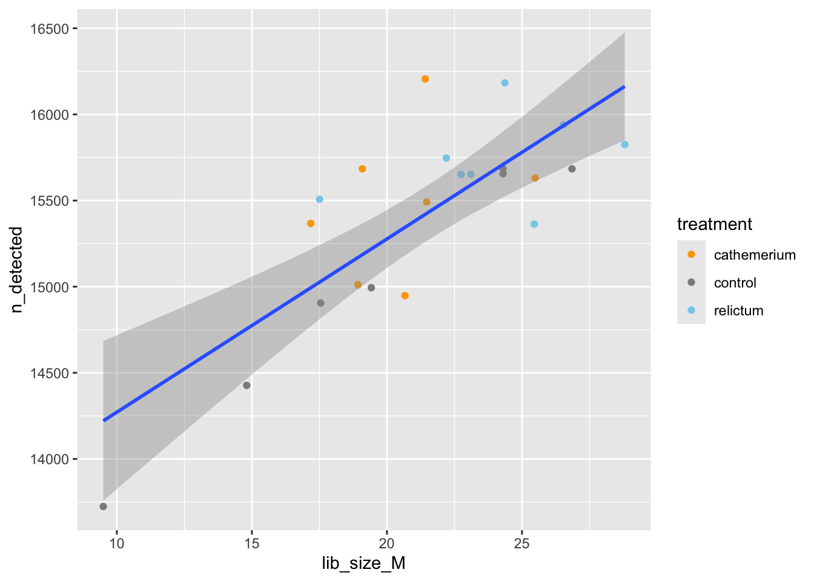
NoteOrdering bars by their values with
fct_reorder() (Click to expand)
To order the bars from low to high values automatically, you can use the fct_reorder() function, which reorders the levels of a factor (here, island) by the values of another column:
island_means |>
mutate(island = fct_reorder(island, mean_body_mass)) |>
ggplot(aes(x = island, y = mean_body_mass)) +
geom_col()
To plot the number of penguins per island instead, you can use geom_bar() directly on the full data set, which counts the rows for each value of the x variable:
penguins |>
ggplot(aes(x = island)) +
geom_bar()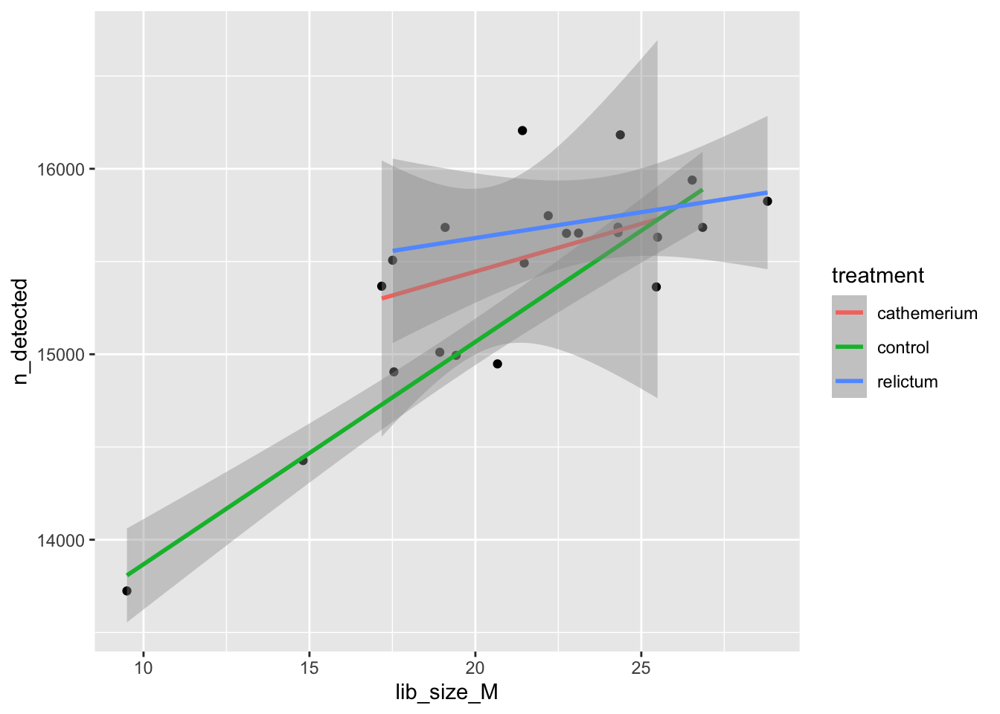
6.2 Box plots
Box plots show the distribution of a numeric variable for each category of a categorical variable. Let’s create a box plot of the distribution of body_mass on each island. This time, we’ll save the plot as an object, box_plot_body_mass_and_island, so we can reuse it later:
box_plot_body_mass_and_island <- penguins |>
ggplot(aes(x = island, y = body_mass)) +
geom_boxplot()
box_plot_body_mass_and_islandWarning: Removed 2 rows containing non-finite outside the scale range
(`stat_boxplot()`).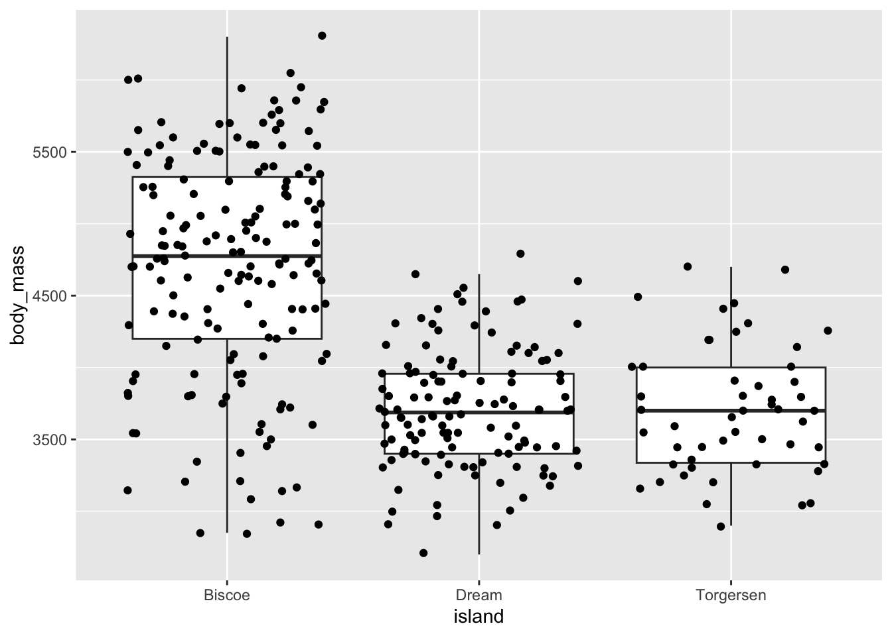
To color the boxes by species, we can map species to an aesthetic as before. But for “filled” shapes like boxes and bars, color only changes the outline, while fill changes the inside:
penguins |>
ggplot(aes(x = island, y = body_mass, fill = species)) +
geom_boxplot()Warning: Removed 2 rows containing non-finite outside the scale range
(`stat_boxplot()`).
To pick fill colors yourself, use scale_fill_manual() instead of scale_color_manual().
Exercise 3: color versus fill
What do you think will happen if you map species to color instead of fill in the box plot above? Predict first, then run the code to check.
Self-study exercise: Adding data points to a box plot
- Add the individual data points to the box plot above, using the
geom_jitter()function.
Click for the solution
penguins |>
ggplot(aes(x = island, y = body_mass)) +
geom_boxplot(outlier.shape = NA) +
geom_jitter()Warning: Removed 2 rows containing non-finite outside the scale range
(`stat_boxplot()`).Warning: Removed 2 rows containing missing values or values outside the scale range
(`geom_point()`).
Note that without outlier.shape = NA, the boxplot’s outliers would be shown twice: by geom_boxplot() and by geom_jitter().
- Color these points by penguin species.
Click for the solution
penguins |>
ggplot(aes(x = island, y = body_mass)) +
geom_boxplot(outlier.shape = NA) +
geom_jitter(aes(color = species))Warning: Removed 2 rows containing non-finite outside the scale range
(`stat_boxplot()`).Warning: Removed 2 rows containing missing values or values outside the scale range
(`geom_point()`).
6.3 Histograms
To see the distribution of a single numeric variable, use a histogram. Like geom_bar(), geom_histogram() counts rows, but it first groups the values of a continuous variable into “bins”:
penguins |>
ggplot(aes(x = body_mass)) +
geom_histogram()`stat_bin()` using `bins = 30`. Pick better value `binwidth`.Warning: Removed 2 rows containing non-finite outside the scale range
(`stat_bin()`).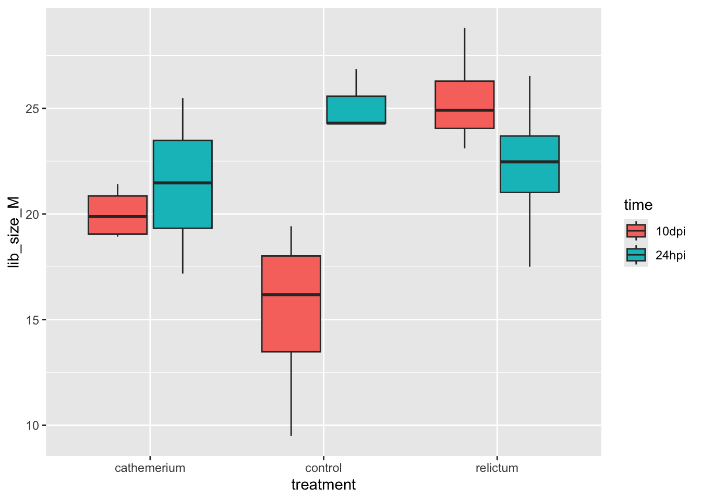
ggplot2 uses 30 bins by default, and prints a message suggesting you choose a better value. You can set the width of the bins with binwidth (here in grams, the unit of body_mass):
penguins |>
ggplot(aes(x = body_mass)) +
geom_histogram(binwidth = 200)Warning: Removed 2 rows containing non-finite outside the scale range
(`stat_bin()`).
Self-study exercise: Histograms
Try a much smaller and a much larger
binwidth, like 20 and 1,000. What happens to the histogram?Click for the solution
penguins |> ggplot(aes(x = body_mass)) + geom_histogram(binwidth = 20)Warning: Removed 2 rows containing non-finite outside the scale range (`stat_bin()`).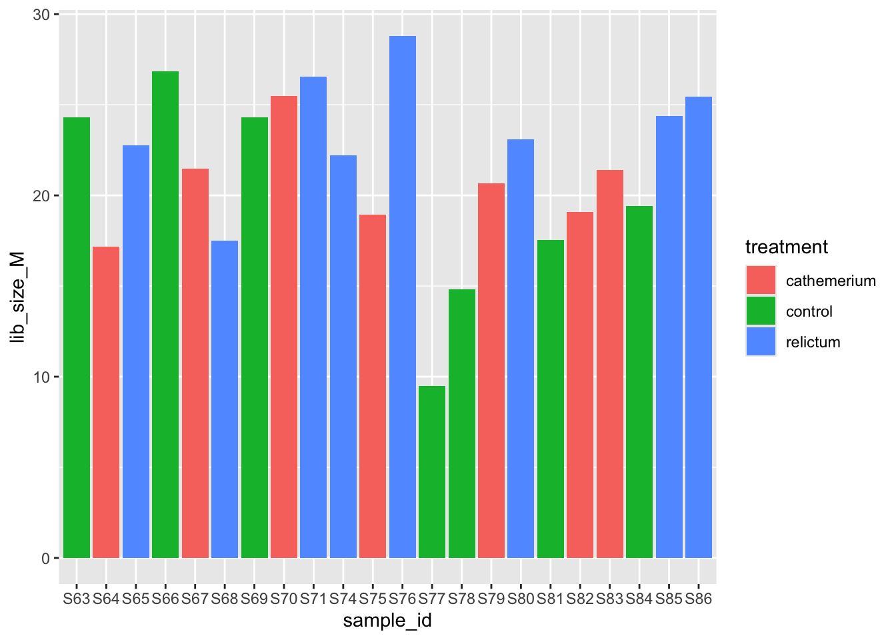
penguins |> ggplot(aes(x = body_mass)) + geom_histogram(binwidth = 1000)Warning: Removed 2 rows containing non-finite outside the scale range (`stat_bin()`).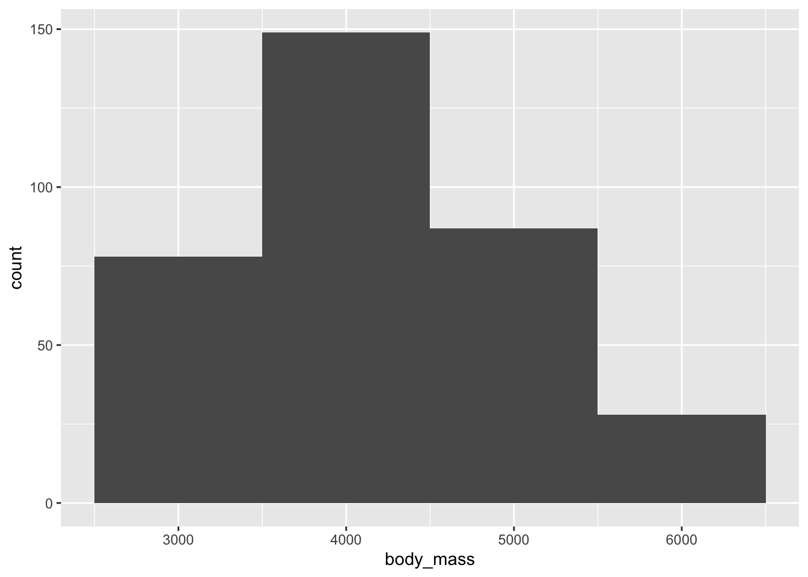
With very narrow bins, the histogram gets spiky and noisy, while with very wide bins, you lose the shape of the distribution. There is no single correct binwidth, so it’s worth trying a few.
Fill the histogram (with
binwidth = 200) byspecies. How are the bars of the different species arranged?Click for the solution
penguins |> ggplot(aes(x = body_mass, fill = species)) + geom_histogram(binwidth = 200)Warning: Removed 2 rows containing non-finite outside the scale range (`stat_bin()`).
The bars of the different species are stacked on top of each other, so the total height of each bar is still the count across all species.
Now, add
position = "identity"andalpha = 0.5insidegeom_histogram(). What does each of these two options do?Click for the solution
penguins |> ggplot(aes(x = body_mass, fill = species)) + geom_histogram(binwidth = 200, position = "identity", alpha = 0.5)Warning: Removed 2 rows containing non-finite outside the scale range (`stat_bin()`).
position = "identity"stops the stacking: each species’ bars start at zero, so they overlap.alpha = 0.5makes the bars semi-transparent (alpharanges from 0, fully transparent, to 1, opaque), so you can see the overlapping bars.
There are many other geoms, e.g. for violin plots and line graphs: see the ggplot2 cheat sheet for an overview.
7 Multi-panel figures: faceting
When you map many variables in a single plot, it can get cluttered. An alternative is faceting: creating multiple panels (“facets”), one for each value of a categorical variable. There are two faceting functions:
facet_wrap()— Facet by a single categorical variable, with the panels “wrapped” into a rectangular layout.facet_grid()— Facet by one or two categorical variables, with the panels laid out in a grid of rows and columns.
For example, to facet the box plot from above by species:
penguins |>
ggplot(aes(x = island, y = body_mass)) +
geom_boxplot() +
facet_wrap(vars(species))Warning: Removed 2 rows containing non-finite outside the scale range
(`stat_boxplot()`).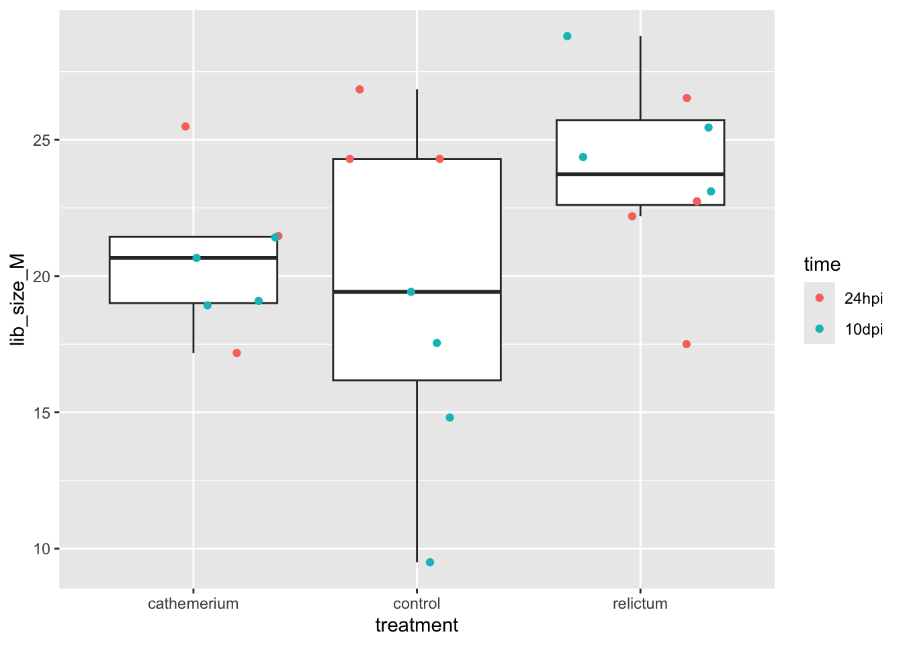
And to facet by both species (columns) and sex (rows):
penguins |>
ggplot(aes(x = island, y = body_mass)) +
geom_boxplot() +
facet_grid(rows = vars(sex), cols = vars(species))Warning: Removed 2 rows containing non-finite outside the scale range
(`stat_boxplot()`).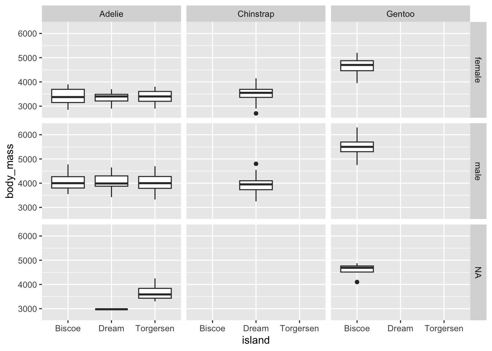
Notice the third row of panels for penguins whose sex is unknown (NA). To remove these, we can filter the data frame before plotting, by inserting a filter() step in the pipeline before ggplot():
penguins |>
filter(!is.na(sex)) |>
ggplot(aes(x = island, y = body_mass)) +
geom_boxplot() +
facet_grid(rows = vars(sex), cols = vars(species))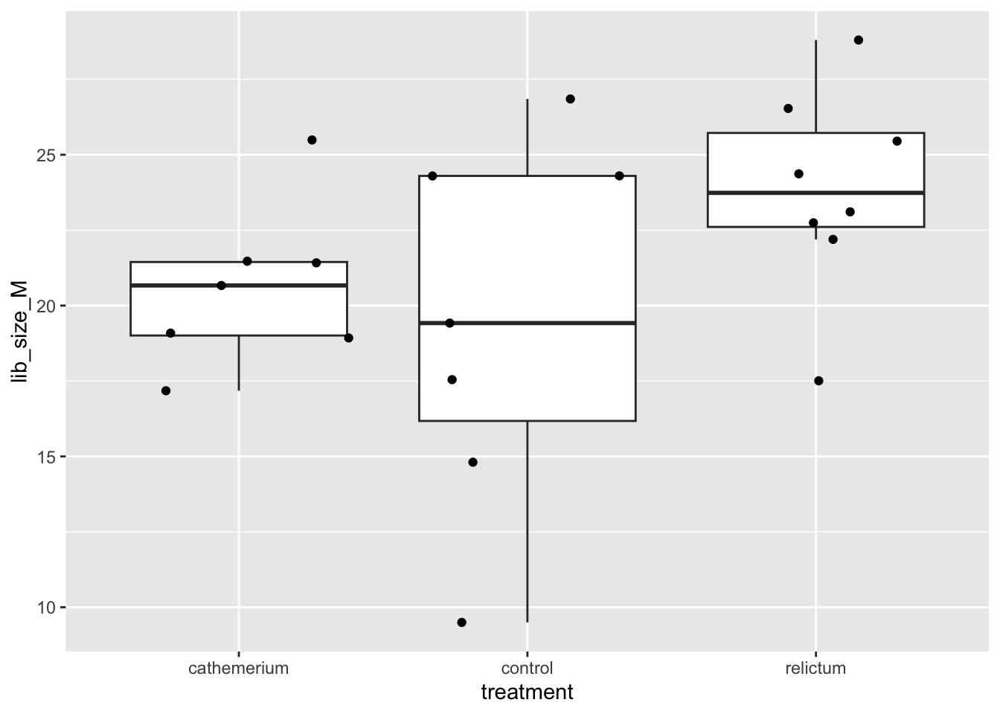
Here, is.na(sex) is TRUE for penguins with a missing value for sex, and the ! reverses this, so we keep only the penguins whose sex is known. Note that we use the pipe |> between data frame steps, but + to add layers to the plot.
Self-study exercise: Faceting a scatter plot
Take your scatter plot from Exercise 2, and facet it by
islandwithfacet_wrap(). Which species are found on which island?Click for the solution
penguins |> ggplot(aes(x = flipper_len, y = body_mass, color = species)) + geom_point() + geom_smooth(method = "lm") + labs( x = "Flipper length (mm)", y = "Body mass (g)" ) + theme_classic() + facet_wrap(vars(island))`geom_smooth()` using formula = 'y ~ x'Warning: Removed 2 rows containing non-finite outside the scale range (`stat_smooth()`).Warning: Removed 2 rows containing missing values or values outside the scale range (`geom_point()`).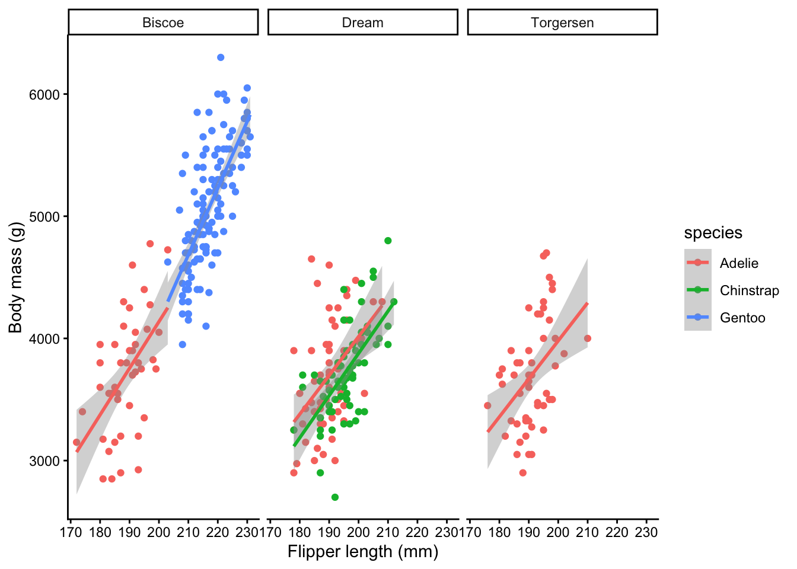
Adelie penguins are found on all three islands, Chinstrap penguins only on Dream, and Gentoo penguins only on Biscoe.
Now, facet the plot by
speciesinstead, and remove the color mapping. Do you find this plot or the one with colors easier to read? What is a disadvantage of each?Click for the solution
penguins |> ggplot(aes(x = flipper_len, y = body_mass)) + geom_point() + geom_smooth(method = "lm") + labs( x = "Flipper length (mm)", y = "Body mass (g)" ) + theme_classic() + facet_wrap(vars(species))`geom_smooth()` using formula = 'y ~ x'Warning: Removed 2 rows containing non-finite outside the scale range (`stat_smooth()`).Warning: Removed 2 rows containing missing values or values outside the scale range (`geom_point()`).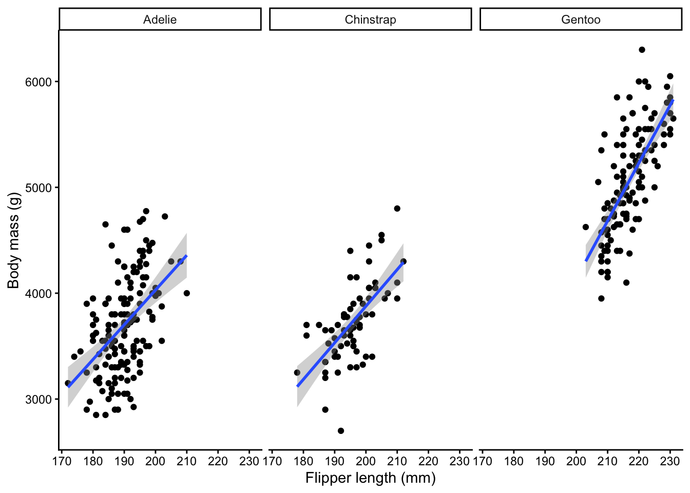
With facets, points of different species no longer overlap, but it’s harder to compare the species directly. With colors in a single panel, comparing species is easy, but the plot can get crowded.
All facets show the same type of plot. To combine different plots into one multi-panel figure, see the optional R self-study page.
8 Reshaping data for plotting
Say we want to see histograms of all three length measurements (bill length, bill depth, and flipper length) side by side. With facets, we could put each in its own panel — but we can only facet by a column, and these measurements are spread across three columns. Recall the Tidy data section from Monday: in this case, it’s as if the measurement type is a variable that is hiding in the column names.
The pivot_longer() function reshapes data from this “wide” format to a “long” format:
penguins_long <- penguins |>
pivot_longer(
cols = c(bill_len, bill_dep, flipper_len), # the columns to combine
names_to = "measurement", # new column with the old column names
values_to = "mm" # new column with the values
)
penguins_long |>
select(species, measurement, mm) |>
head()# A tibble: 6 × 3
species measurement mm
<fct> <chr> <dbl>
1 Adelie bill_len 39.1
2 Adelie bill_dep 18.7
3 Adelie flipper_len 181
4 Adelie bill_len 39.5
5 Adelie bill_dep 17.4
6 Adelie flipper_len 186 Each penguin now has three rows, one per measurement. Now, we can facet by the new measurement column:
penguins_long |>
ggplot(aes(x = mm, fill = species)) +
geom_histogram() +
facet_wrap(vars(measurement), scales = "free")`stat_bin()` using `bins = 30`. Pick better value `binwidth`.Warning: Removed 6 rows containing non-finite outside the scale range
(`stat_bin()`).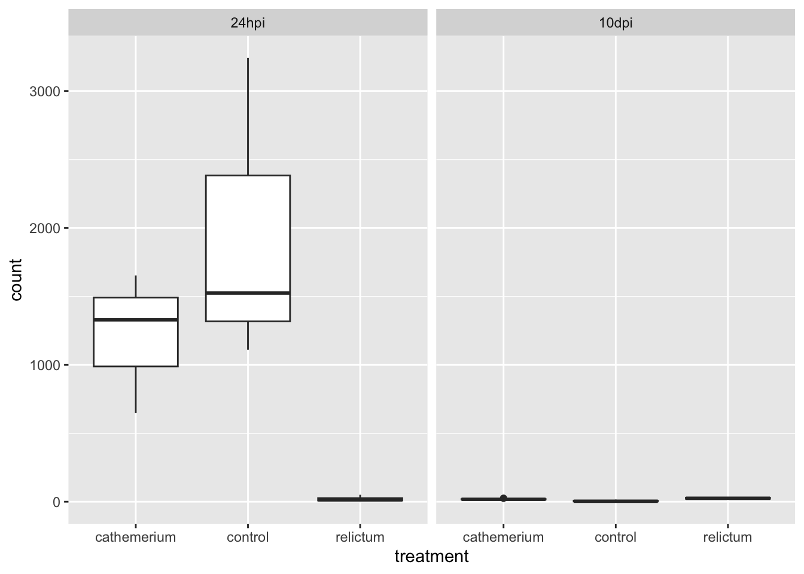
scales = "free" lets each panel have its own axis ranges, because flipper lengths are much larger than bill lengths and depths.
Many omics data sets, such as gene count tables with one column per sample, are in wide format, so you’ll often need pivot_longer() before plotting them with ggplot2.
9 Exporting plots
To save a plot to a file, in formats like PNG, JPEG, or PDF, use the ggsave() function. By default, ggsave() won’t create a folder that doesn’t exist, so first create a results folder in your week13 folder, if it doesn’t exist yet:
dir.create(here("week13/results"), showWarnings = FALSE)Then, save the plot:
ggsave(
filename = here("week13/results/boxplot.png"), # file path and name
plot = box_plot_body_mass_and_island, # what to save
width = 18,
height = 12,
dpi = 300, # dots per inch, i.e. resolution
units = "cm" # units for width and height
)For plots that you made in the console, you can also click the save button in Positron’s Plots pane, but ggsave() gives you more control and is reproducible.
10 Recap
In this lecture, you learned:
- The basic syntax of ggplot2, which builds plots layer by layer
- How to map variables to aesthetics like
colorandfillwithaes(), and set aesthetics to fixed values outside of it - How to make different types of plots with
geom_*()functions - How to change the order of categories by changing factor levels
- How to facet plots with
facet_wrap()andfacet_grid() - How to reshape data with
pivot_longer(), and combine data wrangling and plotting in one pipeline - How to save plots to files with
ggsave()